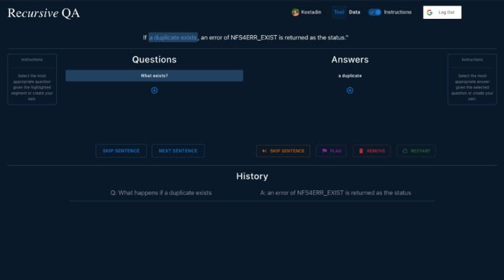
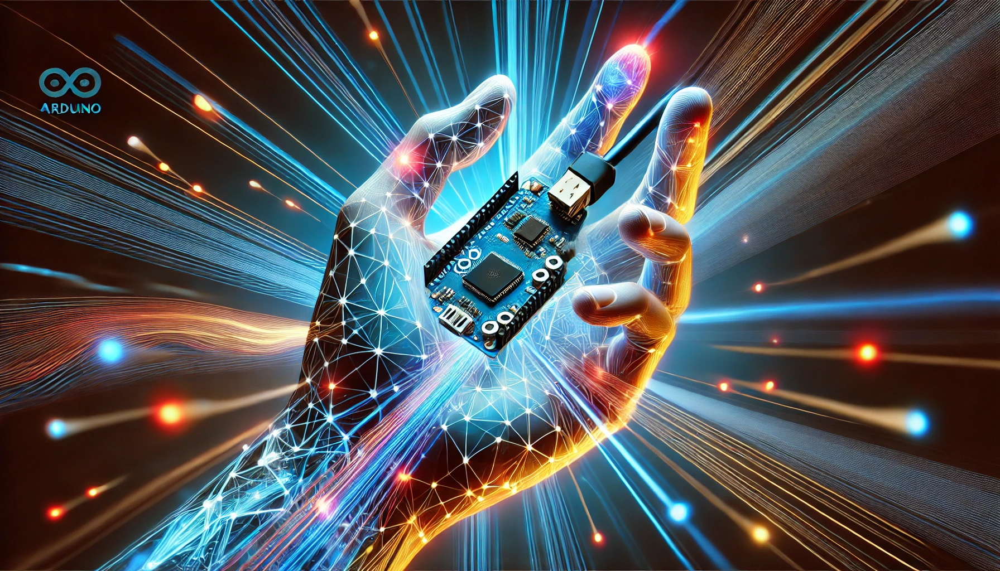

An NLP annotation framework that replaces conventional labeling processes with an intuitive question-answering method. Leveraging constituency parse trees, the system guides annotators by generating targeted question-answer pairs, significantly simplifying the annotation process. Additionally, it integrates visualization tools, user management capabilities, and comprehensive history tracking to enhance annotation accuracy and quality control.
Projects
{kind=link}
I Want to Redistrict
A political science application developed to create and evaluate state districting plans through statistical analysis. Its primary purpose is to identify gerrymandering and support the generation of equitable district maps under human supervision, utilizing data sourced from the 2020 Census. The tool operates on the advanced computational capabilities provided by Stony Brook University's SeaWulf supercomputer.

A comprehensive pipeline encompassing data collection, preprocessing, model training, optimization, and deployment, tailored specifically to develop an optimized CNN for gesture recognition on the Arduino Nano 33 BLE Sense microcontroller. The pipeline leverages the device's integrated 3D accelerometer, gyroscope, and magnetometer sensors to accurately detect orientation, motion, and vibration.
{kind=link}
A human-in-the-loop image annotation system created to identify and classify invasive species in aerial drone imagery, contributing significantly to the conservation of Hawaii's ecosystems. The tool continuously enhances its accuracy through real-time training, progressively offering more accurate suggestions to support annotators effectively. [UH Hilo Stories, 2020]